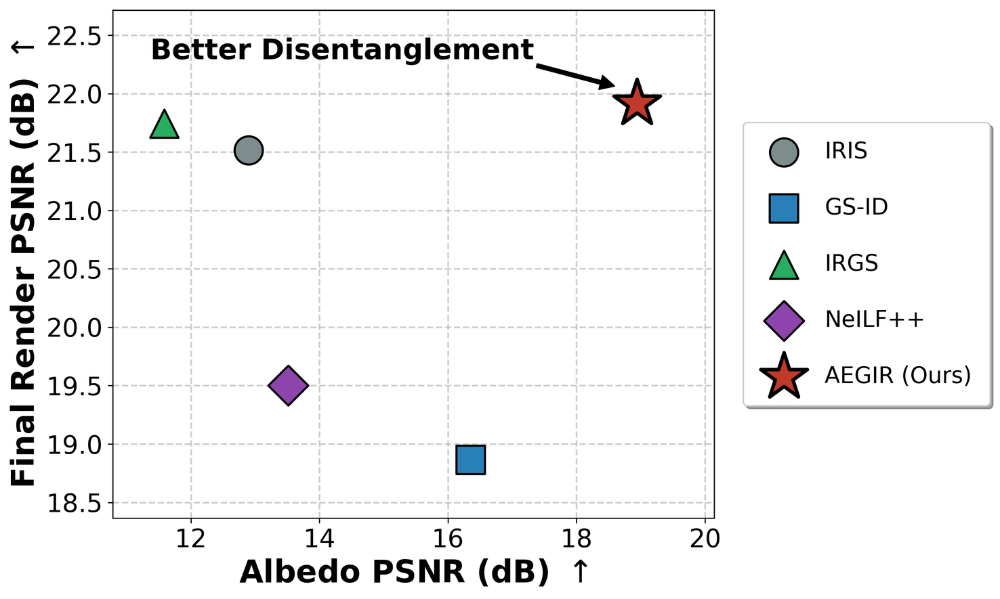
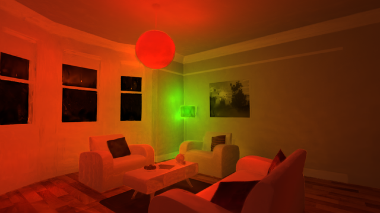
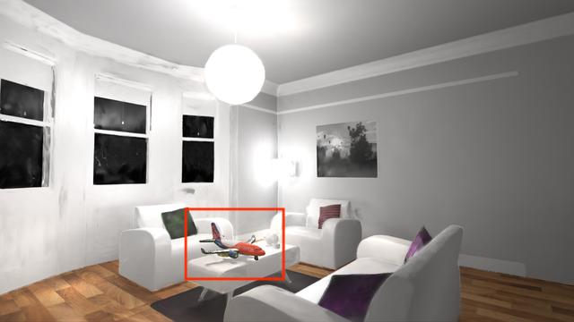
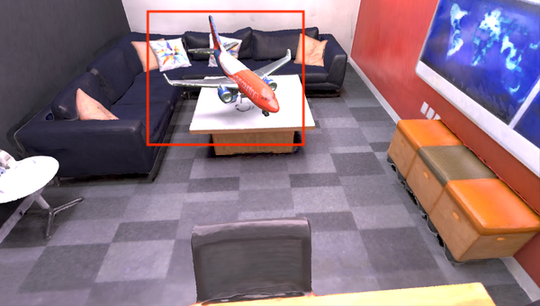

Area Emitters
Each emitter uses anisotropic scale and a Super-Gaussian angular falloff to model lights ranging from compact bulbs to elongated ceiling fixtures.
Computer Graphics Group, Eberhard Karls University of Tübingen
arXiv preprint, 2026

Inverse rendering separates illumination from surface materials, but the two are tightly coupled in captured images. Existing relightable Gaussian Splatting methods usually approximate lighting with point lights, global environment maps, or implicit light fields; these choices struggle with indoor emitters that have finite spatial extent and cast soft, localized shadows.
AEGIR explicitly models local area emitters inside a relightable Gaussian Splatting representation. The method jointly optimizes emitters, geometry, and physically based materials using a differentiable deferred renderer with multiple importance sampling and targeted regularization. This improves illumination reconstruction and supports downstream editing tasks such as controlled relighting and virtual object insertion.
The core idea is to make the light sources geometric. AEGIR represents indoor emitters as localized anisotropic 3D primitives with learnable shape, color, orientation, spatial scale, and angular emission profile. These parameters are optimized together with 2D Gaussian geometry and PBR material maps, so lighting can explain shadows and highlights instead of being baked into albedo.
Each emitter uses anisotropic scale and a Super-Gaussian angular falloff to model lights ranging from compact bulbs to elongated ceiling fixtures.
A G-buffer stores albedo, roughness, metallic, and normals; illumination is evaluated with a microfacet BRDF, direct emitter samples, hemisphere samples, and visibility tracing.
Photometric supervision, diffusion material priors, edge-aware TV, light regularization, and a final emitter-only refinement stabilize the decomposition.

AEGIR uses ellipsoidal emitters with independent spatial scales and angular spread coefficients. The Super-Gaussian falloff controls how sharply radiance decays away from the main emission direction, which lets a single primitive adapt between broad diffuse lights and focused directional sources.


The paper evaluates estimated lighting in a controlled Mitsuba pipeline by fixing ground-truth geometry and materials, then re-rendering each scene with the recovered lights. This isolates lighting errors from geometry, material, and denoising artifacts. AEGIR best matches the indoor reference and recovers smoother, more physically plausible illumination than point-light or environment-map baselines.


| Method | Indoor Lighting | Environment Lighting | ||||
|---|---|---|---|---|---|---|
| PSNR | SSIM | LPIPS | PSNR | SSIM | LPIPS | |
| GS-ID | 28.35 | 0.92 | 0.11 | 26.35 | 0.86 | 0.15 |
| IRGS | 11.26 | 0.49 | 0.25 | 28.98 | 0.88 | 0.14 |
| AEGIR | 31.42 | 0.94 | 0.06 | 30.22 | 0.92 | 0.07 |
Across ScanNet++, Replica, and FIPT-Real, AEGIR reports the best real-world NVS scores in the paper: 18.55 PSNR on ScanNet++, 17.93 on Replica, and 22.07 on FIPT-Real. On synthetic benchmarks, the method also improves albedo recovery, showing that explicit area emitters reduce the tendency to absorb residual illumination into material maps.

Because lighting is represented as editable geometric emitters, AEGIR supports direct scene edits. The recovered decomposition enables controlled relighting and more plausible virtual object insertion under local indoor illumination.





